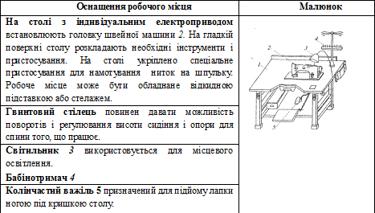
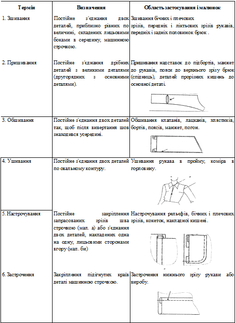

Машинні роботи
Навчальний блок
Організація робочого місця для машинних робіт

Правильна посадка працюючого сприяє підвищенню продуктивності праці. Виріб повинен знаходитися на відстані 30-40см. від очей від працюючого, а лікті – на одному рівні з кришкою столу.
Той, що працює повинен сидіти напроти головки машини, обидві ноги його повинні знаходитися на педалі, на якій розташований діелектричний килимок.
Технічні умови на виконання машинних робіт
- 1. Для виробів з вовняних і шовкових тканин використовують шовкові і акрилові нитки, а у виробах з бавовняних тканин – бавовняні нитки. Всі внутрішні строчки виконують нитками в колір тканини деталей верху виробу.
- 2. Колір ниток для оздоблювальних строчок повинен відповідати кольору тканини деталей верху виробу або бути іншого кольору, якщо це передбачено моделлю.
- 3. Кінці верхніх ниток оздоблювальних строчок виводять на виворітну сторону, зав'язують вузлом і (або) закріплюють трьома-чотирма ручними стібками.
- 4. Кінці всіх внутрішніх строчок, що виконуються на зшивній машині, закріплюють подвійною зворотною строчкою (закріпкою) завдовжки 0,7-1,0 см; у спеціальних, машинах – довжиною 1,5-2,0 см.
- 5. При прокладенні строчок по замкнутих контурах, необхідно, щоб строчки в кінцях швів заходили одна на одну не менш ніж на 2,0-2,5 см.
- 6. Ширина швів повинна відповідати технічним умовам, припусків на шви з'єднання деталей.
- 8. Зшивання деталей, настрочування швів, прокладання оздоблювальних строчок рекомендується виконувати за допомогою направляючих лінійок. Фігурні оздоблювальні строчки виконують по лініях, наміченим за допоміжними лекалами.
- 9. При з'єднанні двох деталей, одна з яких з прямим зрізом, а інша з косим, деталь з косим зрізом необхідно покласти знизу (на рейку двигуна тканини), а деталь з прямим зрізом – зверху.
- 10. При з'єднанні двох деталей з тканин різної товщини, наприклад, тканини верху і тканина підкладки, вниз слід покласти деталь з товстої тканини.
- 11. При з'єднанні двох деталей з посадкою однією з них, деталь, яку потрібно посадити, слід покласти вниз на рейку двигуна тканини.
- 12. Зрізи деталі повинні бути обметані нитками в колір основного матеріалу, або висічені зигзагоподібною лінією, або оброблені швом у підгин з відкритим або закритим зрізом.
- 13. При зшиванні деталей з кутиком, припуск шва розтинається ножицями, не доходячи до вершини кутика приблизно на 0,1-0,2см.
- 14. При зшиванні криволінійних деталей (коміри, клапани і тому подібне) припуск зрізів на шов обшивання підрізайте до ширини 0,3-0,4cм. Потім розтинайте його в кутиках в декількох місцях, щоб не було натягнення. Розтин не повинен доходити
до строчки обшивання на 0,2 cм.
Термінологія машинних робіт
